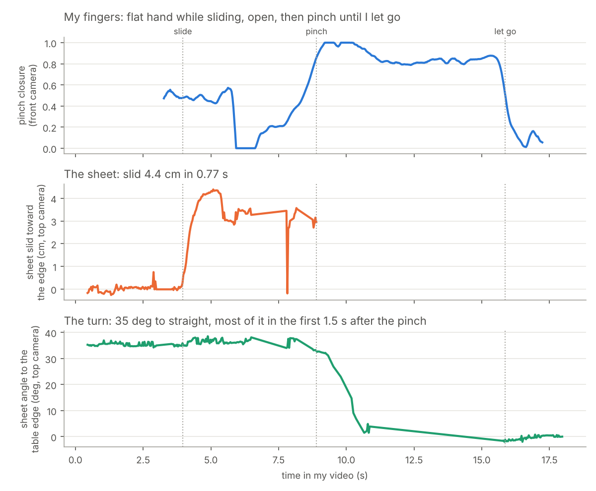
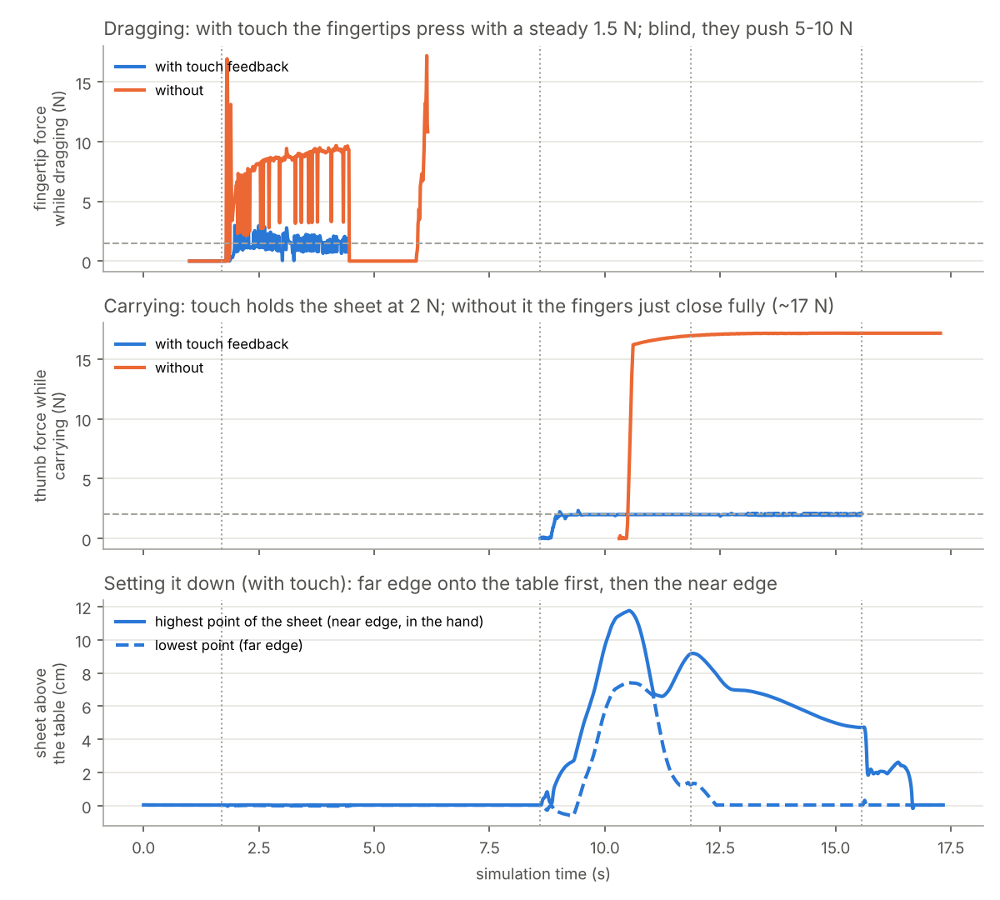

Paper Hands: a humanoid copies how I pick up paper
I filmed myself sliding a sheet of paper to the table edge, pinching it, lifting it, turning it straight and laying it inside a taped rectangle. A Unitree G1 with a 3-finger Dex3 hand does the same task in MuJoCo, driven by what I measured in my videos and controlled through fingertip touch sensors. No model is trained: the robot retargets my demonstration and corrects it with touch. I built it for Armature AI Labs' online Humanoid Challenge, where it placed joint 5th of 19 submitted builds.
Capture the task the way a person actually does it, with enough views to measure both my hand and the sheet.
front camera laptop webcam on my handtop camera phone above the sheet
What I did
A red sheet on a white table starts about 35° off straight. I slide it about 4 cm toward me with a flat hand, slip my fingers under the edge, pinch, lift, turn it straight while carrying it, and lay it inside a rectangle of blue tape, far edge first. A laptop webcam faced my hand across the table and a phone recorded the sheet from above. My first, single-camera demo took five tries to find a usable angle: overhead hid the lift, and a handheld phone moved too much.
Concepts
Learning from demonstration
Multi-camera capture
Camera synchronization
Pixel-to-metric scaling
Challenges and fixes
problem
I forgot the sync tap, so the two videos had no shared start signal.
fix
Synced them on the moment I let go of the sheet, which both cameras see (0.45 s offset). As a check, the slide then lines up too: the sheet moves at 4.0–4.8 s in the top view and my hand at 4.1–5.0 s in the front view.
problem
The phone above the table moved slightly during the take, which looks like the sheet moving.
fix
Measured the sheet's position and angle relative to the table edge in every frame, not relative to the camera. Pixels convert to cm using the sheet's known 27.9 cm long side.
02
Turn video into signals
Measure what the robot needs to copy: how my fingers close, when each phase happens, and how the sheet moves.

finger closure, slide distance and turn angle measured from my two cameras
What I built
MediaPipe tracks 21 hand landmarks in the front video (420 consecutive frames). From them I compute finger closure (thumb–index distance over palm length), the pinch point's path, and when I start sliding, open my hand, pinch, lift and let go. A colour tracker follows the red sheet in the top video and measures its slide and turn against the table edge: 4.4 cm in 0.77 s, then 35° to straight, mostly in the first 1.5 s after the pinch. One command (prepare_demo.py) runs the whole chain.
Concepts
MediaPipe hand landmarks
Colour segmentation
Phase segmentation
Signal filtering
Pose relative to a reference
Challenges and fixes
problem
The front camera looks across the table, so my hand's height is foreshortened once it moves away from the camera.
fix
After the lift, only the timing from that camera is used, not the height.
03
Retarget onto the G1
Turn my hand's path and timing into joint angles for a robot arm and hand that are shaped nothing like mine.
first demo my edge pick next to the G1 copying it
What I built
A plan with a pinch-point position and hand orientation every 10 ms, solved to shoulder, elbow and wrist angles with damped least-squares IK. The arm's spare degree of freedom is used in the null space of that task to keep the elbow out at the robot's side, clear of its torso. The Dex3 pinch pose was found separately: the hand points down at the sheet edge so the thumb lands on top and the index and middle fingers curl under, like my own pinch. The robot's base is fixed and gravity-compensated, since the task is about the arm and hand, not balance.
Concepts
Motion retargeting
Damped least-squares IK
Null-space control
Redundant manipulators
Gravity compensation
Challenges and fixes
problem
The upper arm swung across the chest, up to 3.2 cm into the torso. I had switched off upper-arm/torso collisions in the scene, which hid it.
fix
Turned collisions back on and used the null space to hold the elbow 3.5 cm from the torso while dragging and 1.5 cm while carrying. Over a whole run the upper arm now stays at least 0.7 cm clear.
problem
Copying my finger opening literally dropped the sheet. My measured closure dips while I carry, because my hand turns in the camera's view, not because it opens.
fix
The robot stays closed from the pinch until the moment I let go.
problem
My fingers got under the sheet because real paper bends. The simulated sheet is a rigid plate and can't buckle.
fix
A robot-specific regrip: fingertips up, back in front of the edge, then in under the overhang. Every step like this that can't come from my video is marked ROBOT in the code.
04
Close the loop with touch
Let force, not just position, decide how hard the fingers press and grip.

with touch: 1.5 N while dragging, 2 N while carrying; without: 5–10 N and about 17 N
What I built
I added touch sensors to the Dex3 fingertips in the MuJoCo model. While dragging, a force loop adjusts press depth to hold 1.5 N. At the pinch the fingers freeze on contact and the thumb squeezes to 2 N. If the sheet hasn't come out far enough, the robot pulls again. To set it down, it lays the far edge on the table first, then lowers the rest, opens the fingers and pulls the hand out, the way I did.
Concepts
Tactile sensing
Force control
Closed-loop re-planning
Contact-rich manipulation
Challenges and fixes
problem
At my own stroke speed (5.7 cm/s) the fingertips slipped before the touch loop could build up force.
fix
Kept the shape of my stroke but capped it at 4 cm/s, and pull again if the sheet is still short.
problem
Late in a long drag the fingertips slid onto the part already hanging over the edge, and pressing there tipped the sheet like a seesaw (the far end lifted 3.5 cm).
fix
Press 10 cm in from the sheet's edge and never bring the fingertips within 1.5 cm of the table edge. The sheet now tilts at most 0.6 mm while dragged.
problem
The sheet never reached the table when laying it down: the Dex3 pinch holds it 14° up from the hand, so a 20° hand tilt only angled it 6° down.
fix
The hand tips 14° further, opens its fingers from 4.4 cm up, and lets the near edge come down with them.
problem
Backing the open hand out "up and away" lifted the edge again; the sheet stayed propped up in 5 of 20 runs.
fix
Pull straight back, then rise. The sheet still drifts 0.25 cm as the fingers leave, so the robot aims that much short.
05
Evaluate, then try five fingers
Show it works beyond the one starting position in my video, and measure what touch actually adds.
experiment five-finger Dex5 picking the sheet off the edge
What I built
Each task runs 20 trials with the sheet randomized: 0.5–4 cm in from the table edge, ±3 cm sideways, turned ±10°, 4–6 g, friction 0.3–0.5. Every trial runs again with touch feedback off. A trial succeeds if the sheet stays lifted for at least 90% of the time my hand was up, ends flat, and for placing has all four corners inside the target.
As an experiment I mounted Unitree's five-finger Dex5 hand on the same arm. Hooking the index finger under the sheet didn't hold a rigid plate; turning the palm up and pinching thumb against index did. It picks the sheet off the edge 10/10.
Concepts
Domain randomization
Ablation (touch on vs. off)
Success metrics from demos
URDF → MJCF
Challenges and fixes
problem
My first "randomized" trials all started from the same place. Setting a free body's position in MuJoCo does nothing once the model is compiled.
fix
The start pose is set through qpos0, and every trial CSV records the actual starting pose.
problem
Without touch the robot also succeeds 20/20, so the success rate alone can't show what touch does.
fix
Compared force instead: 1.9 N median grip with touch vs. 16 N blind. Blind pressing also came out short and needed a second pull in all 20 runs; with touch, in none.
/results
Results
Joint 5th of 19 submitted builds in the Humanoid Challenge. Measured on 20 randomized trials per task, with and without touch feedback.
20/20slide, pick, straighten and lay the sheet inside the target, all four corners in
1.9 Nmedian grip while carrying with touch, vs. 16 N without
0.4 cmmedian placement error from the target centre (worst 0.7 cm), within 3° of straight
Picking a sheet that already overhangs the edge: 17/20 with touch, 15/20 without. Limits: everything is in simulation, the sheet's pose is read from the simulator instead of a camera, and the paper is a rigid plate. At starting angles of 20–30° the sheet still ends within 5° of straight but misses the target by 3–11 cm, so the results above are for ±10°.